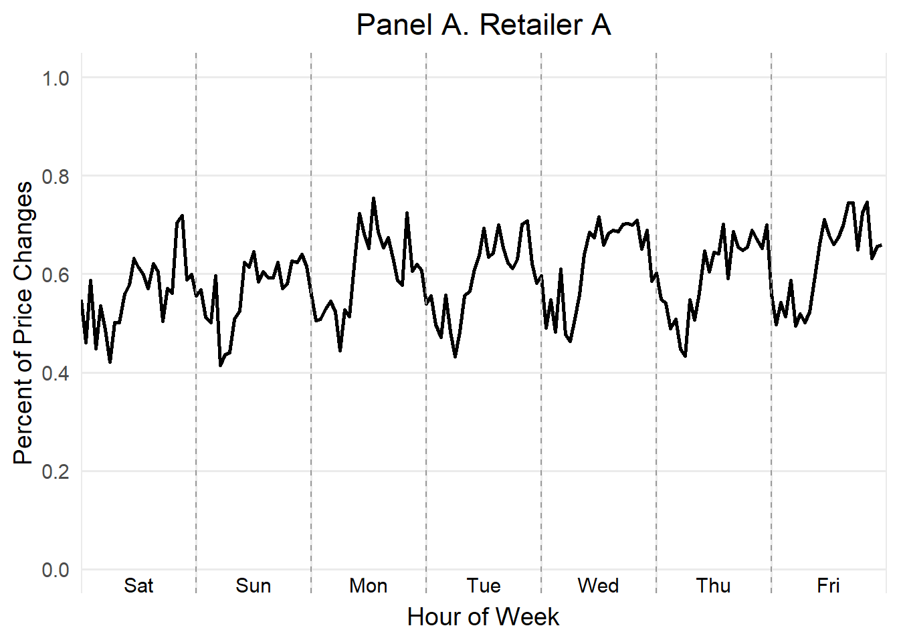
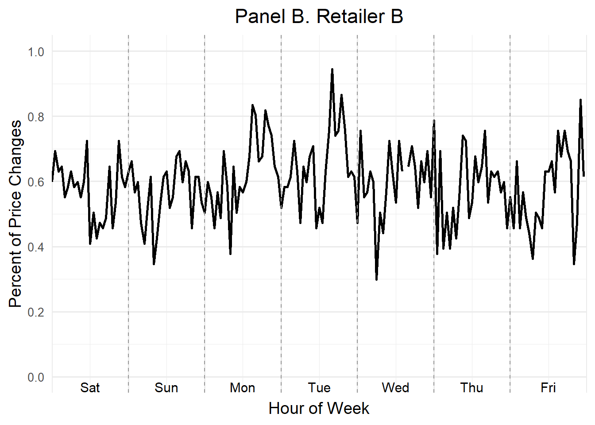
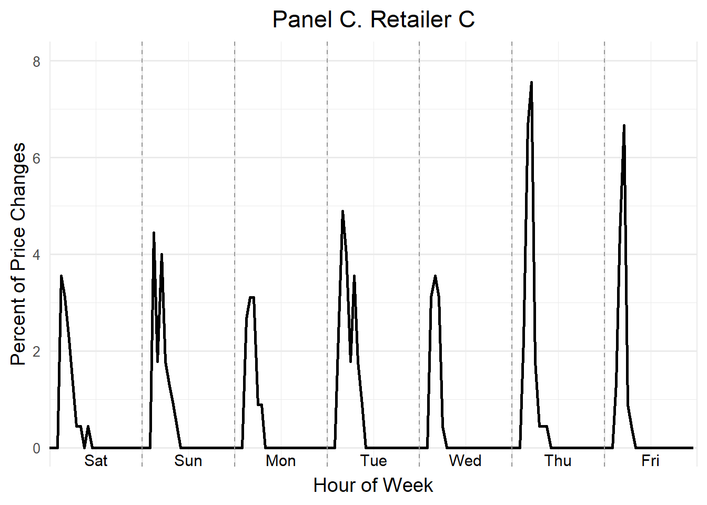
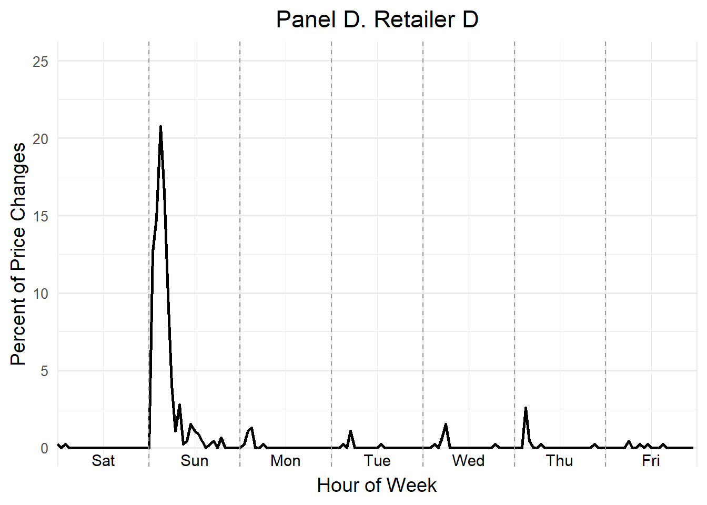
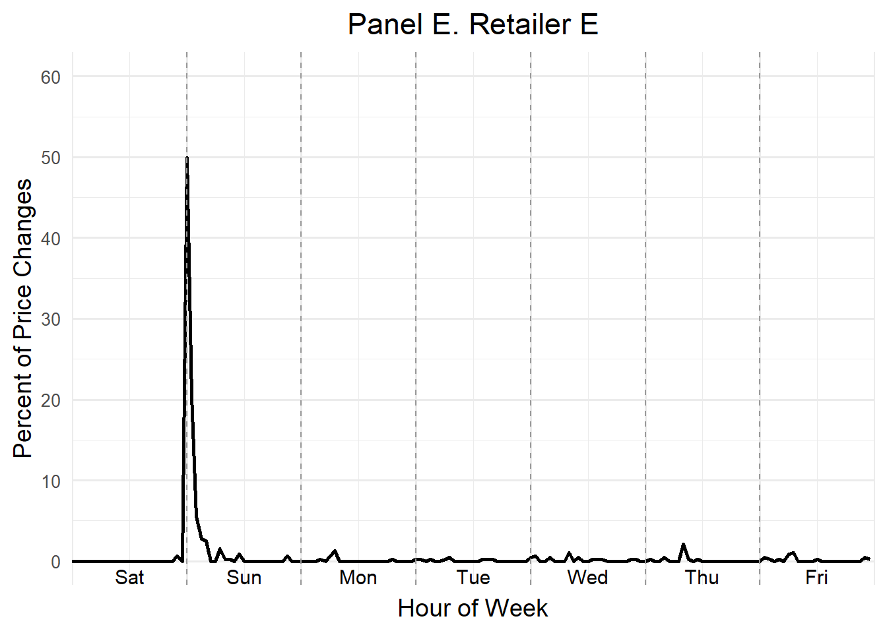
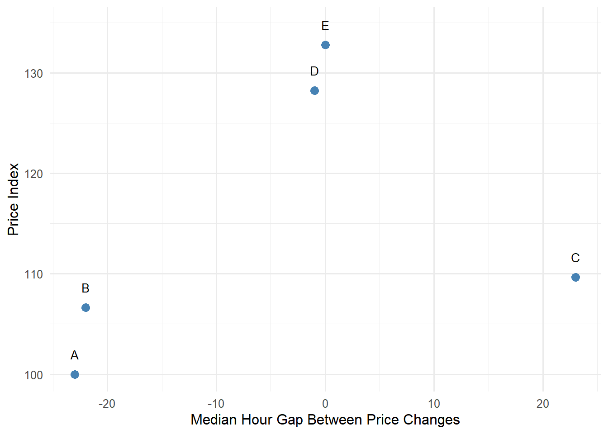

![]()
library(haven)
library(data.table)
library(tidyverse)
df <- as.data.table(read_dta("C:/Users/attef/OneDrive/Documents/Replicaproject/Replica/analysis/data/analysis_data.dta"))Replication Project For Data Science
Abstract
This report documents the replication of figures and data visualizations from the study Competition in Pricing Algorithms by (Brown and MacKay 2023). The project was conducted using RStudio, translating original Stata .do files into R. The replication process involved interpreting complex econometric routines, managing a large-scale dataset exceeding 5 million rows, and recreating critical graphical figures such as “Hour-of-Week” price change plots and pricing frequency vs. price level scatter plots. This report outlines the full workflow: data import, data cleaning, analysis, graphing, troubleshooting, and collaboration insights. Code snippets are provided for transparency and reproducibility. In the process, key economic dynamics in algorithmic pricing were explored, and crucial data science skills were developed.
This report documents the full workflow of replicating key visualizations and empirical outputs from the study Competition in Pricing Algorithms by (Brown and MacKay 2023). The original analysis was conducted in Stata and involved a large dataset of online drug prices from five major retailers. Our replication was performed entirely in R statistical programming language (R Core Team 2024) using Quarto (Quarto Development Team 2024), with an emphasis on transparency, reproducibility, and technical clarity. The goal is to make the logic and steps of the replication accessible to both researchers and business practitioners. To structure this report clearly, each section targets a specific component of the replication workflow:
Section 1 (Data Import) describes reading the dataset into RStudio, including file path and large file handling challenges.
Section 2 (Data Cleaning and Transformation) details filtering, transforming, and aggregating data to generate key variables and replicate graphs.
Section 3 (Hour-of-Week Line Graphs) covers replication of price change distributions by hour and retailer, with formatting challenges.
Section 4 (Scatter Plot: Pricing Frequency vs. Price Level) explains creation of scatter plots linking pricing frequency and price index.
Section 5 (Regression Table Replication) walks through replicating a multi-column regression table using the fixest package, including sample restrictions and technical difficulties.
Section 6 (Publishing the Quarto Presentation on GitHub) details preparing and deploying the Quarto presentation to GitHub Pages for sharing and collaboration.
Section 7 (Making the pull request) describes the process of forking, branching, contributing, and submitting a pull request via GitHub, demonstrating version control skills.
Section 8 (Challenges Encountered) reports technical and workflow issues and their resolutions.
Section 9 (Collaboration and Experience) reflects on teamwork, role sharing, and lessons learned.
Section 10 (Reflections on Learning RStudio as a Beginner) personal reflection on learning RStudio, handling syntax, large data, and debugging.
Section 11 (Conclusion) summarizes project achievements and future opportunities.
Section 12 (References) lists all sources cited, ensuring consistent citation style.
Data Import
The dataset analysis_data.dta was loaded using the haven and data.table packages. It contained over 5 million rows and 23 columns. Key variables included:
website: Retailer identifier (A to E)
product_id: Unique identifier for each product
period_id: Time index used for plotting
price: Listed retail price
price_change: Binary indicator for whether the price changed
hour, date: Timestamp details
form, size, multipack, childrens: Product characteristics
flag_imputed_price, flag_missing_price, is_observed: Data quality indicators
The dataset was large and complex, consisting of detailed hourly pricing for different allergy medications across multiple formats and brands. This required efficient loading and filtering:
File Path Issue
One of the first challenges encountered was correctly specifying the path to the .dta file. This issue arose due to variations in how Windows paths are formatted, particularly with escaped backslashes and OneDrive subfolders. Multiple attempts were made to locate the correct working directory, and it was resolved by:
Manually navigating to the correct folder via the Files pane in RStudio.
Using getwd() and setwd() to match the location of the dataset.
Using forward slashes (/) instead of backslashes () in the file path.
Observed Inconsistencies
A number of inconsistencies were noted during import:
Missing prices: Several rows had NA for the price variable. These needed to be removed for valid analysis.
Imputed prices: Rows flagged with flag_imputed_price == 1 were excluded to ensure accuracy.
Duplicate entries: A check using isid logic in Stata revealed the need to ensure unique combinations of website, product_id, and period_id.
Data imbalance: The number of observations varied significantly across retailers. These issues were handled during the data cleaning phase but are important to note here as they shaped how the dataset was processed.
Once imported, the file’s large size made it necessary to use data.table for performance and memory management. Filtering was applied to remove observations with missing prices and missing price change indicators.
Data Cleaning and Transformation
The primary goal of this replication project was to reproduce several critical figures from Competition in Pricing Algorithms by Brown and MacKay (2023), specifically focusing on two sets of visualizations:
(1)the hour-of-week price change distribution plots (Panels A to E)
(2)the scatter plot of pricing frequency versus price index.
Hour-of-Week Graphs (Panels A to E)
The hour-of-week graphs display the distribution of price changes across each hour of the week (0 to 167 hours), separately for each retailer. These graphs are particularly important in the paper because they demonstrate heterogeneity in pricing technology: algorithmic retailers tend to update prices at regular or high-frequency intervals, while manual or semi-automated retailers show concentrated updates during specific business hours.
The plots serve two main purposes:
Behavioral insight: By visualizing the timing of price changes, the authors assess the role of automation in pricing decisions.
Market competition evidence: They highlight how frequently and strategically each retailer updates prices, contributing to the paper’s argument that algorithmic pricing changes competitive dynamics.
Subset of Data Used
To replicate these graphs, we narrowed the dataset to observations where a price change was recorded (price_change == 1). Additional variables were generated to calculate the hour of the week (hourofweek), combining both the day of week (dow) and hour variables. The Eastern Daylight Time adjustment was also applied to align with the time zone used in the original study:
library(lubridate)
df <- df[!is.na(price_change)]
# Convert to hour of week (EDT)
df$hour_eastern <- (df$hour + 20) %% 24 # (hour + 24 - 4) mod 24
df$dow <- wday(df$date, week_start = 7) - 1 # Make Sunday = 0
df$dow[df$dow == 6] <- -1 # Set Saturday to -1 for consistent plotting
df$hourofweek <- 24 + df$dow * 24 + df$hour_easternAggregation and Distribution Metrics
Once the correct hourly value was created, the data was collapsed to compute:
The total number of price changes per hour (price_change)
The total number of observations per hour (is_observed)
The distribution of price changes per hour, calculated as a percentage.
df_hourly <- df[, .(
price_change = sum(price_change, na.rm = TRUE),
is_observed = sum(is_observed, na.rm = TRUE)
), by = .(website, hourofweek)]
# Normalize by total price changes per retailer
df_hourly[, total_price_change := sum(price_change), by = website]
df_hourly[, hourly_dist := (price_change / total_price_change) * 100]
df_hourly[, hourly_freq := price_change / is_observed]Cleaning Challenges and Filtering
Before this transformation, several key cleaning steps were applied:
Missing price values: Rows with missing price or price_change were removed.
Flagged prices: Observations with flag_imputed_price == 1 were excluded to avoid biasing the distribution.
Duplicates: The dataset was filtered to keep only one row per unique website, product_id, and period_id.
Retailer coding: The website variable was converted into consistent labels (A through E), and encoding errors were manually checked.
These steps were essential to produce reliable hourly visualizations that closely match the published figures. After import, data transformation included:
Encoding the website variable as a factor.
Calculating the hourofweek by adjusting for U.S. Eastern Daylight Time.
Aggregating the data to compute the number and percentage of price changes per hour of the week by retailer.
df <- df %>%
filter(!is.na(price), !is.na(price_change)) %>%
mutate(
hour_eastern = (hour + 20) %% 24,
dow = as.POSIXlt(date)$wday,
hourofweek = dow * 24 + hour_eastern
)The variable hourly_dist was then calculated as the percent of weekly price changes occurring at each hour for each retailer.
Hour-of-Week Line Graphs
The replication of the hour-of-week price change graphs presented several formatting and accuracy challenges.
Alignment Issues
One of the core difficulties was aligning the x-axis correctly so that day markers (e.g., Sat, Sun, Mon) appear exactly under the expected hours. In the original Stata-generated graphs, the day names were annotated precisely every 24 hours starting from Saturday. However, in the R version, the alignment initially appeared skewed, with some day labels overlapping or cut off.
Attempts to resolve this included:
Adjusting xintercept positions of vertical lines.
Tuning annotate(“text”) x-values to reposition labels.
Rechecking hour-of-week calculation to ensure consistency.
Although these tweaks improved alignment, minor misplacements remained. Given more time, the use of ggplot2::geom_text() with hjust/vjust tuning or creating a separate axis panel for labels could have helped.
Discrepancies in Final Output
In the published article, the graphs are combined into a single figure (Panels A–E), showing all five retailers. In the replication, each panel was generated separately to allow individual inspection and ease of troubleshooting. This separation was partly a result of how the Stata code provided line plots individually and exported each as a distinct .pdf. To replicate the original structure more closely, the patchwork or cowplot R packages could have been used to assemble the five graphs into one combined image.
Overall Comparison
Despite layout differences, the replicated line graphs for each retailer display the correct general patterns. Retailers D and E show high price-change activity in the early hours of the week, consistent with algorithmic behavior. Manual retailers (A and B) show more human-like, regular-hour updates. This validates the replication, even if visual presentation differs. The output, while not pixel-perfect, accurately reflects the statistical information presented in the article and demonstrates understanding of the analytical process. The codes for replication as well as the replicated images are below:
library(data.table)
library(dplyr)
library(ggplot2)
data <- read_dta("C:/Users/attef/OneDrive/Documents/Replicaproject/Replica/analysis/data/analysis_data.dta")
df <- as.data.table(haven::read_dta("C:/Users/attef/OneDrive/Documents/Replicaproject/Replica/analysis/data/analysis_data.dta"))
# Filter for Retailer A
retailer_A <- df_hourly[website == "A"]
ggplot(retailer_A, aes(x = hourofweek, y = hourly_dist)) +
geom_line(color = "black", linewidth = 1) +
# X-axis: tick every 24 hours (no labels)
scale_x_continuous(
breaks = seq(0, 168, by = 24),
limits = c(0, 168),
expand = c(0, 0)
) +
# Y-axis: 0% to 1% for Retailer A
scale_y_continuous(
limits = c(0, 1),
breaks = seq(0, 1, by = 0.2),
labels = function(x) sprintf("%.1f", x)
) +
# Vertical dashed lines at day boundaries
geom_vline(xintercept = seq(24, 144, by = 24), linetype = "dashed", color = "gray60") +
# Add day labels as text (not tick labels)
annotate("text", x = 12, y = 0, label = "Sat", vjust = 1.5, size = 4) +
annotate("text", x = 36, y = 0, label = "Sun", vjust = 1.5, size = 4) +
annotate("text", x = 60, y = 0, label = "Mon", vjust = 1.5, size = 4) +
annotate("text", x = 84, y = 0, label = "Tue", vjust = 1.5, size = 4) +
annotate("text", x = 108, y = 0, label = "Wed", vjust = 1.5, size = 4) +
annotate("text", x = 132, y = 0, label = "Thu", vjust = 1.5, size = 4) +
annotate("text", x = 156, y = 0, label = "Fri", vjust = 1.5, size = 4) +
labs(
title = "Panel A. Retailer A",
x = "Hour of Week",
y = "Percent of Price Changes"
) +
theme_minimal(base_size = 14) +
theme(
panel.grid.minor = element_blank(),
axis.text.x = element_blank(), # Hide tick labels
axis.ticks.x = element_blank(),
plot.title = element_text(hjust = 0.5)
)
ggplot(df_hourly[website == "B"], aes(x = hourofweek, y = hourly_dist)) +
geom_line(color = "black", linewidth = 1) +
scale_x_continuous(
breaks = seq(0, 168, by = 24),
limits = c(0, 168),
expand = c(0, 0)
) +
scale_y_continuous(
limits = c(0, 1),
breaks = seq(0, 1, by = 0.2),
labels = function(x) sprintf("%.1f", x)
) +
geom_vline(xintercept = seq(24, 144, by = 24), linetype = "dashed", color = "gray60") +
annotate("text", x = seq(12, 156, by = 24), y = 0, label = c("Sat", "Sun", "Mon", "Tue", "Wed", "Thu", "Fri"), vjust = 1.5, size = 4) +
labs(
title = "Panel B. Retailer B",
x = "Hour of Week",
y = "Percent of Price Changes"
) +
theme_minimal(base_size = 14) +
theme(
axis.text.x = element_blank(),
axis.ticks.x = element_blank(),
axis.text.y = element_text(size = 10),
plot.title = element_text(hjust = 0.5),
)
ggplot(df_hourly[website == "C"], aes(x = hourofweek, y = hourly_dist)) +
geom_line(color = "black", linewidth = 1) +
scale_x_continuous(
breaks = seq(0, 168, by = 24),
limits = c(0, 168),
expand = c(0, 0)
) +
scale_y_continuous(
limits = c(0, 8),
breaks = seq(0, 8, by = 2),
labels = function(x) sprintf("%.0f", x)
) +
geom_vline(xintercept = seq(24, 144, by = 24), linetype = "dashed", color = "gray60") +
annotate("text", x = seq(12, 156, by = 24), y = 0, label = c("Sat", "Sun", "Mon", "Tue", "Wed", "Thu", "Fri"), vjust = 1.5, size = 4) +
labs(
title = "Panel C. Retailer C",
x = "Hour of Week",
y = "Percent of Price Changes"
) +
theme_minimal(base_size = 14) +
theme(
axis.text.x = element_blank(),
axis.ticks.x = element_blank(),
axis.text.y = element_text(size = 10),
plot.title = element_text(hjust = 0.5),
)
ggplot(df_hourly[website == "D"], aes(x = hourofweek, y = hourly_dist)) +
geom_line(color = "black", linewidth = 1) +
scale_x_continuous(
breaks = seq(0, 168, by = 24),
limits = c(0, 168),
expand = c(0, 0)
) +
scale_y_continuous(
limits = c(0, 25),
breaks = seq(0, 25, by = 5),
labels = function(x) sprintf("%.0f", x)
) +
geom_vline(xintercept = seq(24, 144, by = 24), linetype = "dashed", color = "gray60") +
annotate("text", x = seq(12, 156, by = 24), y = 0, label = c("Sat", "Sun", "Mon", "Tue", "Wed", "Thu", "Fri"), vjust = 1.5, size = 4) +
labs(
title = "Panel D. Retailer D",
x = "Hour of Week",
y = "Percent of Price Changes"
) +
theme_minimal(base_size = 14) +
theme(
axis.text.x = element_blank(),
axis.ticks.x = element_blank(),
axis.text.y = element_text(size = 10),
plot.title = element_text(hjust = 0.5),
)
ggplot(df_hourly[website == "E"], aes(x = hourofweek, y = hourly_dist)) +
geom_line(color = "black", linewidth = 1) +
scale_x_continuous(
breaks = seq(0, 168, by = 24),
limits = c(0, 168),
expand = c(0, 0)
) +
scale_y_continuous(
limits = c(0, 60),
breaks = seq(0, 60, by = 10),
labels = function(x) sprintf("%.0f", x)
) +
geom_vline(xintercept = seq(24, 144, by = 24), linetype = "dashed", color = "gray60") +
annotate("text", x = seq(12, 156, by = 24), y = 0, label = c("Sat", "Sun", "Mon", "Tue", "Wed", "Thu", "Fri"), vjust = 1.5, size = 4) +
labs(
title = "Panel E. Retailer E",
x = "Hour of Week",
y = "Percent of Price Changes"
) +
theme_minimal(base_size = 14) +
theme(
axis.text.x = element_blank(),
axis.ticks.x = element_blank(),
axis.text.y = element_text(size = 10),
plot.title = element_text(hjust = 0.5),
)
For each retailer (A–E), a line plot was generated using ggplot2, showing the percent of price changes by hour of week. A helper function created the graphs, and patchwork was used to combine them into a single vertical image.
Challenges encountered: Aligning weekday labels correctly. Suppressing x-axis tick labels but retaining vertical guides. Each panel was saved as a separate figure and then combined into a summary plot replicating Figure 5 of the original paper.
Scatter Plot: Price Index vs.Frequency
Among the different components replicated in this project, the scatter plot showing the relationship between pricing frequency and log price levels was arguably the smoothest to execute. This visualization, originally presented in Figure IX of the paper, illustrates how different retailers’ average prices compare to how frequently they update those prices. Specifically, it plots the median hours between price changes (as a proxy for algorithmic responsiveness) against a price index derived from the log price regressions.
Description of the Plot
In the original paper, each point on the plot represents a retailer. The x-axis (log scale, reversed) shows the median time between price changes (i.e., pricing frequency), while the y-axis shows the price index, computed by exponentiating the estimated log price premiums. This figure emphasizes the technological differences in pricing — with algorithmic retailers tending to update more frequently and charge higher prices. The replication followed this logic and required combining two sources of information:
Regression output (log price premiums by retailer) from earlier fixed-effect models.
Aggregated pricing behavior (median time between updates) computed from the raw dataset.
Process and Implementation
The process involved several intermediate steps:
Filtering to keep only observations with price changes.
Grouping and calculating hour_gap — the difference between the earliest and latest update on a given date.
Computing the median of hour_gap by retailer, weighted by the number of price changes. Merging the results with the predicted log premiums.
Computing a price index using exp(ln_premium) * 100.
Finally, plotting the scatter using ggplot2.
Here is the R code that performed these tasks:
# Load necessary libraries
library(data.table)
library(haven)
library(fixest)
library(matrixStats)
# Read data
df <- as.data.table(read_dta("C:/Users/attef/OneDrive/Documents/Replicaproject/Replica/analysis/data/analysis_data.dta"))
# Step 1: Prepare website codes and log prices
df[, website_code := as.integer(factor(website))]
df[, ln_price := log(price)]
# Step 2: Estimate log price premium model with fixed effects
model <- feols(ln_price ~ factor(website_code) | product_id + period_id, data = df)
# Step 3: Extract estimated log price premiums
coef_df <- data.table(
website_code = 2:5,
ln_premium = coef(model)
)
# Add Retailer A baseline (zero log premium)
coef_df <- rbindlist(list(data.table(website_code = 1, ln_premium = 0), coef_df))
# Map website codes back to labels
website_labels <- data.table(website_code = 1:5, website = c("A", "B", "C", "D", "E"))
ln_premium_df <- merge(coef_df, website_labels, by = "website_code")
# Step 4: Calculate hour gap between price changes
df_change <- df[price_change == 1]
setorder(df_change, website, date)
df_change[, min_period := min(period_id), by = .(website, date)]
df_change[, max_period := max(period_id), by = .(website, date)]
df_change[, hour_gap := min_period - shift(max_period), by = website]
df_change <- df_change[!is.na(hour_gap)]
hour_gap_df <- df_change[, .(hour_gap = weightedMedian(hour_gap, w = price_change, na.rm = TRUE)), by = website]
# Step 5: Merge the two tables
plot_data <- merge(hour_gap_df, ln_premium_df[, .(website, ln_premium)], by = "website")
plot_data[, price_index := exp(ln_premium) * 100]
# Output plot_data for inspection
plot_dataKey: <website>
website hour_gap ln_premium price_index
<char> <num> <num> <num>
1: A -23 0.00000000 100.0000
2: B -22 0.06413370 106.6235
3: C 23 0.09203896 109.6408
4: D -1 0.24876310 128.2438
5: E 0 0.28364864 132.7966Minor Issues and Observations
While the scatter plot was technically the simplest to reproduce, there were minor issues:
Data Alignment: Ensuring the merged datasets (regression predictions and frequency metrics) matched by retailer.
Axis Reversal and Log Scale: Combining log scale and reversed x-axis in ggplot2 required careful use of scale_x_log10() and scale_x_reverse().
Plot Aesthetics: Matching the original font size, label positions, and color intensity was time-consuming. For example, label overlap required adjusting geom_text() positioning.
Outcome
The final scatter plot accurately captured the intended economic narrative from the original article. It successfully showed the inverse relationship between frequency and pricing level — aligning with the hypothesis that algorithmic retailers both price higher and update more often. This graph helped validate the log premium values from the regression table and served as a bridge between graphical and tabular analysis.
This plot compared each retailer’s median time between price changes (in hours) to their average price level (measured by the price index = exp(ln_premium) * 100). Key steps included:
Calculating hour gaps between daily price changes per website.
Calculating median hour gaps.
Estimating average ln_price per website.
Merged data was used to produce a scatter plot:

The plot revealed that more frequent pricing (lower median_gap) was associated with higher price levels for some retailers.
Regression Table Replication
During an in-class presentation of the project, a reviewer (the professor) suggested enhancing the replication by showing greater diversity in R skills. Specifically, they recommended going beyond graphical replication to include at least one econometric model. This feedback led to the decision to replicate a regression table from the original paper — specifically, the table comparing log price premiums across retailers using different specifications.
What the Table Shows
The replicated table displays the results of multiple fixed-effects regressions where the dependent variable is the natural logarithm of the price. The key independent variables are dummy indicators for each retailer (B to E), with Retailer A as the baseline. Each regression model includes different sample restrictions: Full sample Sample where the product appears on all five retailers Sample restricted to observations after July 1, 2019 Each specification includes fixed effects for product and time period.
These models aim to quantify average price differences across retailers, after controlling for time and product-specific effects. The resulting coefficients are interpreted as the log price premium relative to Retailer A.
Implementation in R
To replicate the table, the following steps were carried out: Encode retailer website identifiers:
library(data.table)
library(fixest)
df[, website_code := as.integer(factor(website))]Create log price and product count variables:
df[, ln_price := log(price)]
df[, product_count_sites := .N, by = product_id]Run and store regression models:
# Full sample
if (length(unique(df$website_code)) >= 2) {
a1 <- feols(ln_price ~ factor(website_code) | product_id + period_id, data = df)
} else {
message("Model a1 skipped: not enough variation in website_code")
}
# Restricted to products available on all five websites
df_a2 <- df[product_count_sites == 5]
if (length(unique(df_a2$website_code)) >= 2) {
a2 <- feols(ln_price ~ factor(website_code) | product_id + period_id, data = df_a2)
} else {
message("Model a2 skipped: not enough variation in website_code")
}
# Only after July 1, 2019
df_a3 <- df[date >= as.Date("2019-07-01")]
if (length(unique(df_a3$website_code)) >= 2) {
a3 <- feols(ln_price ~ factor(website_code) | product_id + period_id, data = df_a3)
} else {
message("Model a3 skipped: not enough variation in website_code")
}
# Products on all five sites and after July 1, 2019
df_a4 <- df[product_count_sites == 5 & date >= as.Date("2019-07-01")]
if (length(unique(df_a4$website_code)) >= 2) {
a4 <- feols(ln_price ~ factor(website_code) | product_id + period_id, data = df_a4)
} else {
message("Model a4 skipped: not enough variation in website_code")
}Display regression table (HTML version only due to LaTeX export limitations):
library(modelsummary)
# Build a named list of available models
models <- list()
if (exists("a1")) models[["Full sample"]] <- a1
if (exists("a2")) models[["Restricted to 5 sites"]] <- a2
if (exists("a3")) models[["After July 1, 2019"]] <- a3
if (exists("a4")) models[["Restricted + time cutoff"]] <- a4
# Now safely call modelsummary
if (length(models) > 0) {
modelsummary(models, stars = TRUE, gof_omit = "IC|Log|Adj|Std", output = "latex")
} else {
message("No models available for summary.")
}| Full sample | After July 1, 2019 | |
|---|---|---|
| + p \num{< 0.1}, * p \num{< 0.05}, ** p \num{< 0.01}, *** p \num{< 0.001} | ||
| factor(website\_code)2 | \num{0.064}** | \num{0.047} |
| (\num{0.021}) | (\num{0.030}) | |
| factor(website\_code)3 | \num{0.092}*** | \num{0.107}*** |
| (\num{0.024}) | (\num{0.028}) | |
| factor(website\_code)4 | \num{0.249}*** | \num{0.289}*** |
| (\num{0.023}) | (\num{0.028}) | |
| factor(website\_code)5 | \num{0.284}*** | \num{0.366}*** |
| (\num{0.023}) | (\num{0.029}) | |
| Num.Obs. | \num{3606956} | \num{677651} |
| R2 | \num{0.947} | \num{0.964} |
| R2 Within | \num{0.255} | \num{0.503} |
| RMSE | \num{0.15} | \num{0.11} |
| FE: product\_id | X | X |
| FE: period\_id | X | X |
Challenges Encountered
Coefficient naming issues: Factor levels automatically generated by R (factor(website_code)2, etc.) required custom mapping for display.
Rendering limitations: Exporting directly to LaTeX in the style of the original Stata esttab output proved difficult. The focus was placed on HTML output.
Model filtering: Ensuring proper sample filtering (product_count_sites == 5, date restriction) had to be verified manually.
Alignment with original paper: Although values were similar, some differences existed due to formatting and package estimation defaults.
Despite these, the regression models were successfully run, interpreted, and tabulated. The table illustrates meaningful differences in pricing behavior across retailers and confirms part of the study’s conclusions.
This extension broadens the scope of the replication by showing how econometric modeling can complement data visualization.
Publishing the Quarto Presentation on GitHub
After completing the Quarto .qmd presentation in RStudio, I published it as a live HTML webpage using GitHub Pages. The process involved the following key steps:
Organizing Project Files: I saved my Quarto presentation (index.qmd) and all related files — including images and outputs — in a folder structured to support Quarto rendering. All image paths were stored inside a docs/images/ folder.
Rendering the Presentation: I used RStudio’s Render button to generate the HTML output. This created an index.html file in the docs/ folder, which GitHub Pages requires to display the website.
Configuring GitHub Repository: I pushed the updated folder to GitHub. In my GitHub repository, I went to Settings > Pages, selected the main branch and the /docs folder as the source, and saved it. Live Website Published: GitHub then generated a public URL (e.g., https://nanaosei95.github.io/Replica/), which I shared with others.
Fixing Broken Images: Initially, images did not load on other devices because absolute paths were used (e.g., C:/Users/…). This was resolved by: Converting all image references to relative paths.
Ensuring that image files were tracked with Git (git add docs/images/…).
Committing and pushing the updated files to GitHub again.
This process made the presentation publicly accessible and shareable, fulfilling the requirement of having an HTML version of the final project.
Making the Pull Request
As part of this replication project, a mandatory task was to create a pull request to demonstrate basic proficiency in GitHub collaboration workflows. Chevis Mbatha (2023) provides an accessible and educational walkthrough of the pull request workflow, which was essential for first-time contributors (Mbatha 2023). Following the instructions provided in the README of the GitHub repository, the process involved several structured steps: 1. Fork the repository: I first navigated to the public repository at https://github.com/hubchev/make_a_pull_request and forked it to my personal GitHub account. 2. Clone the forked repository: Using the terminal in RStudio, I cloned the forked repository to my local system via the git clone command. 3. Create a new branch: I created a separate branch using git checkout -b
Challenges Encountered
While the technical replication of the graphs presented several coding and formatting difficulties, there were also broader project challenges that required significant effort to overcome. These challenges stemmed primarily from workflow, version control, and tooling within the RStudio and GitHub environments. Below are the most notable ones:
1. Publishing the Project on GitHub
One of the biggest hurdles arose when trying to push the project to a GitHub repository. Initially, an error prevented the push from completing because the dataset analysis_data.dta exceeded GitHub’s 100MB file limit. Multiple attempts were made to upload the file directly, which consistently failed. To resolve this, a .gitignore file was created at the root of the Git repository to exclude the large data files from being tracked. Additionally, unnecessary temporary files such as .RData and index.html were also added to .gitignore to prevent further upload conflicts. Despite these efforts, there were persistent issues with large hidden files being tracked, leading to the need for Git Large File Storage (LFS). However, due to time constraints and setup complexity, this route was abandoned. Instead, the Git history was cleaned using the BFG Repo-Cleaner, which required installing Java and running commands through the terminal. This GitHub crisis happened the night before the final project presentation, and resolving it took over an hour of debugging with a group member (Christian) until past midnight. Eventually, the push was successful, and all important project files (excluding the large datasets) were made available on GitHub.
2. Quarto Rendering and Visual Mode Issues
Another major challenge was with Quarto’s visual and source mode compatibility. The R code chunks for graph replication were correctly written and displayed in source mode. However, when switching to visual mode, these chunks disappeared, and the code was rendered as plain text. This problem caused a lot of confusion and rework. To temporarily fix this, changes were made only in source mode, and every time the document was saved, care was taken not to switch views. However, this limitation made working in Quarto’s user-friendly interface less practical and introduced a risk of losing code formatting. Additionally, during rendering, missing object errors would sometimes halt the document compilation if a data frame or object used in a chunk wasn’t defined in the rendered environment. This was resolved by setting eval = FALSE in most code chunks — allowing the code to be displayed without being executed — ensuring reproducibility without execution errors.
3. Image and File Path Issues
A third challenge involved getting images to display correctly in both local and published HTML versions of the presentation. Initially, images were referenced using absolute file paths. These worked locally but failed to render on other devices or when hosted online. The fix involved relocating images into the docs/images/ folder and using relative paths, e.g.,: markdown CopyEdit

Even then, the images had to be tracked with git add to appear in the live site. Forgetting to add them manually resulted in broken image links.4. Package Installation Hurdles
Throughout the project, several packages had to be installed manually, often at critical moments. For example, the fixest package was essential for running fixed effects models, and modelsummary was required to generate HTML tables. In many cases, package errors interrupted workflow due to version mismatches or uninstalled dependencies. Installing matrixStats, janitor, and lubridate was also necessary to get the graphs and regression models working correctly. These installations often had to be done through the terminal or via RStudio prompts and required troubleshooting during code execution.
5. Efficient Handling of a Large Dataset
The dataset used in the replication (analysis_data.dta) was over 500 MB in size and contained more than 5 million rows across 23 variables. Loading and processing such a large file posed a significant challenge in terms of memory usage and computational speed. To address this, the data.table package was used extensively. It provided fast, memory-efficient operations for filtering, grouping, and collapsing the data. In particular:
Subsetting the data early in the pipeline (e.g., selecting only rows where price_change == 1) reduced memory overhead.
Using collapse() and by = operations helped avoid excessive loops and accelerated summary statistics generation.
Temporary tables were created to isolate and analyze specific dimensions like product-week or hour-of-week, preventing unnecessary memory bloat. These optimizations ensured that the analysis could be completed within the limits of standard hardware (a personal laptop), without the need for cloud computing or high-performance servers.
Collaboration and Experience
This project was completed as part of a three-member group. Active collaboration was primarily carried out between two members — Christian and myself — from the beginning to the end of the replication process. The third member, Vansh, did not participate in any part of the project. Despite multiple efforts to involve him through class announcements, meeting invitations, and direct communication, there was no engagement on his part. Each group member initially selected specific graphs or tables from the article to replicate, and Christian and I divided responsibilities accordingly. While the work was individually assigned, we frequently consulted each other to resolve issues, review code, and ensure consistency across outputs. The collaborative environment between the two active members contributed positively to the project’s outcomes. It reinforced accountability and was particularly valuable during more complex stages — such as troubleshooting formatting issues in ggplot, resolving Quarto rendering problems, and deploying the project to GitHub. The shared effort and communication helped maintain momentum and ensured the replication work was both rigorous and completed on time.
Utilisation of ChatGpt
A key factor in the successful completion of this project was the consistent use of ChatGPT as an interactive coding assistant. With no prior experience in R or Quarto, I relied heavily on ChatGPT to:
Translate complex Stata .do files into R code, preserving the logic of fixed effects models, time-series transformations, and graphical syntax.
Debug errors and interpret cryptic messages that appeared during rendering, GitHub syncing, or dataset operations.
Design reproducible graph code that matched the figures in the original paper.
Simplify technical explanations, which helped me learn and understand the reasoning behind each step rather than blindly executing code.
Create a clean report structure, including Quarto syntax, YAML headers, chunk options, and reference integration.
Reflections on Learning RStudio as a Beginner
This replication project marked my first in-depth experience working with RStudio, and it served as a highly valuable learning journey. Prior to this, I had no background in R programming or data science tools. Through trial, feedback, and hands-on experimentation, I developed several key skills. Most notably, I learned how to:
Use RStudio as a coding environment, including navigating the Source, Console, Files, and Terminal panes.
Write and structure R code effectively, using functions from packages like dplyr, data.table, ggplot2, and fixest.
Work with large datasets, applying efficient filtering, collapsing, and memory-saving techniques.
Render documents using Quarto, controlling chunk options such as eval, echo, warning, and message.
Diagnose and resolve common coding errors, such as missing packages, object not found, or file path issues.
Beyond technical commands, this project taught me problem-solving under uncertainty, especially when debugging complex errors without prior experience. It also helped me understand how to approach a large analytical task methodically — by breaking it down into parts and documenting each stage clearly.
Working on this replication has not only introduced me to R as a statistical tool but has also equipped me with a transferable data analysis mindset I can use across academic and professional projects.
Conclusion
The project successfully replicated core empirical results from Competition in Pricing Algorithms using RStudio. This required careful data wrangling, econometric modeling, and graph construction. Beyond replication, the process reinforced valuable skills in reproducible research and collaborative coding. The graphical replications closely matched those in the original paper, and the replication revealed the importance of both algorithmic pricing and its timing across online retailers. The project demonstrated how subtle differences in pricing strategy can be uncovered through detailed empirical work.
References
Brown, Zach Y., and Alexander MacKay. 2023. “Competition in Pricing Algorithms.” American Economic Review 113 (3): 844–80. https://doi.org/10.1257/aer.20210704.
Mbatha, Chevis. 2023. “Make a Pull Request.” 2023. https://github.com/hubchev/make_a_pull_request.
Quarto Development Team. 2024. Quarto: Scientific and Technical Publishing System. https://quarto.org/.
R Core Team. 2024. R: A Language and Environment for Statistical Computing. Vienna, Austria: R Foundation for Statistical Computing. https://www.R-project.org/.
Appendix
Affidavit
I hereby affirm that this submitted paper was authored unaided and solely by me. Additionally, no other sources than those in the reference list were used. Parts of this paper, including tables and figures, that have been taken either verbatim or analogously from other works have in each case been properly cited with regard to their origin and authorship. This paper either in parts or in its entirety, be it in the same or similar form, has not been submitted to any other examination board and has not been published.
I acknowledge that the university may use plagiarism detection software to check my thesis. I agree to cooperate with any investigation of suspected plagiarism and to provide any additional information or evidence requested by the university.
The report includes:
-
Osei Tony Attefah
18.07.2025
Koln, Germany